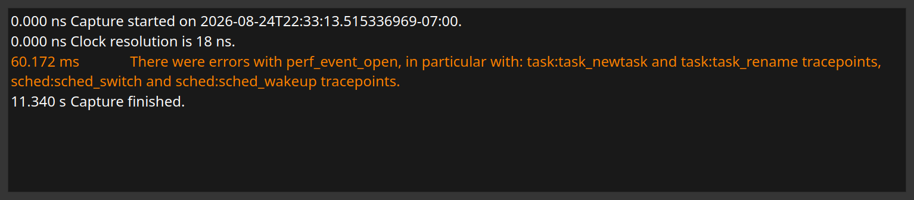

The capture log
What Orbit did while the capture ran, and anything that went wrong doing it.
Taking a capture involves a lot that can partly fail: symbols that were not found, functions that could not be instrumented, a tracepoint that was not permitted. The capture log, opened from the button in the status bar, records all of it with the time into the capture at which it happened.
It is the first place to look when a capture is missing something it should have had.
